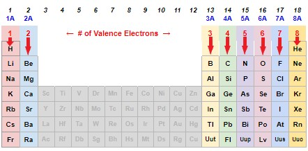
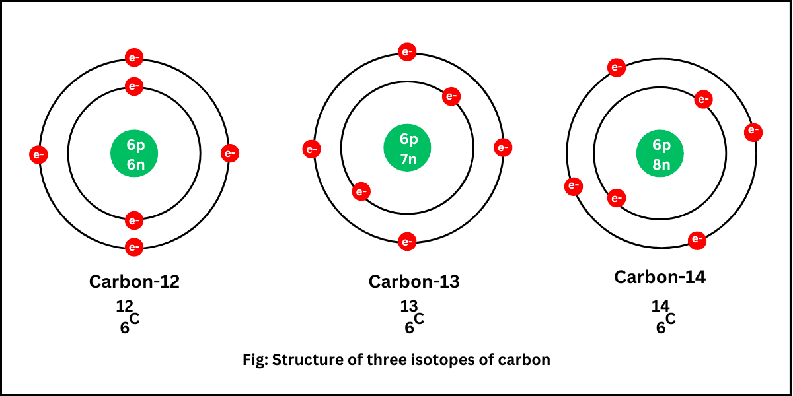

The real friends were the valence electrons we bonded with along the way.
Alright, alright, I know you might be sick of hearing about "valence electrons" and "valence shells" without knowing what it means. But in this lesson, you're going to
be a valence master!
Essentially, think of the word valence as the word outer. When electrons are part of an element, they aren't all stuck in one spot. Rather, they revolve and go around
the atom, and are constantly moving. If you've ever seen the multi-circle, "solar system" model of an atom in a sci-fi movie, that's exactly what it looks like (according to Bohr)!

In this image here, the grey dots circling around are the electrons, with the nucleus consisting of the protons and neutrons sits in the middle.
The cool thing about electrons is, the more electrons you actually have on an atom, certain ones stick close while others sit the furthest from the nucleus. Take sodium
here as an example:

In the first shell of every atom, the one RIGHT next to the nucleus, only two electrons like to fit and stay there. And, for simplicity, every subsequent shell holds 8 electrons that it keeps in pairs.
As we can see for Sodium, it has its first two, another full shell of eight electrons, and then one lonely electron on the third shell. This is the valence electron!
So, why do we care about valence electrons in the first place? Well, as you might already know (we'll cover it soon), valence electrons are responsible for many of the bonds and reactions possible with an element.
All you need to know for now is that the last digit of the group/row number will give you the number of valence electrons on the periodic table. Every alkali metal has one valence electron, and they're all
in Group 1. Every noble gas has 8 valence electrons (a full shell), as they're all in Group 18. Helium is the one exception to this rule, where it has a full shell of 2 electrons. We're going to test you on this in a second, so take a look at the image below!

One last thing we have to talk about in this lesson, and that's isotopes! When an element occurs in nature (or sometimes artificially created by crazy scientists) it can have a different amount of neutrons.
It has the same electrons, and protons, and largely is the same element! But it can have more or less neutrons, which alters the mass number of the atom and in some cases alter properties of the element.
We name isotopes by simply using the name of the element, and then a dash + its mass number. For example, gold usually has 79 neutrons, and an isotope could be gold-81. Here's a chart below of some carbon isotopes so you can get the idea:

Same electrons, same protons, only thing that changes is the neutron count and the mass, as more neutrons equals a heavier atom!